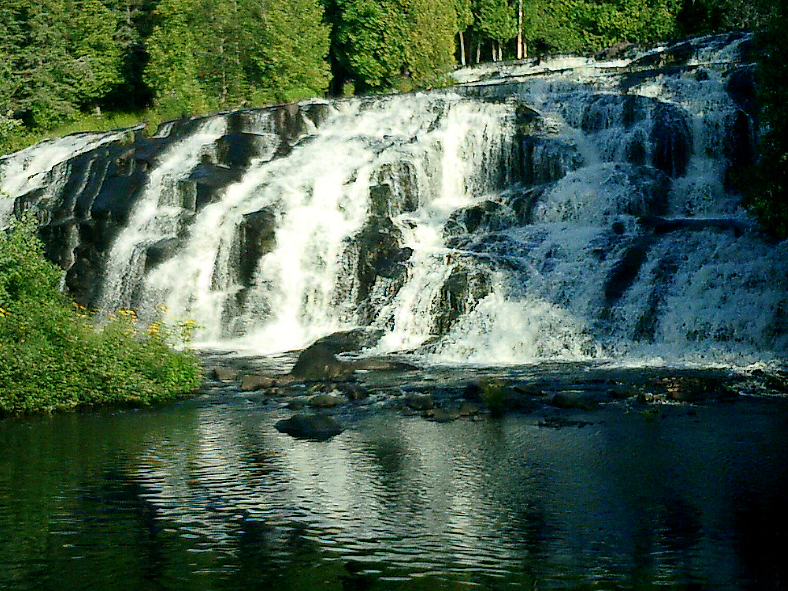

Waterfall Statistics
300+
Michigan Waterfalls
50+
Wisconsin Waterfalls
165ft
Tallest (Big Manitou)
12
Featured Falls
Featured Waterfalls
üì∏ Tahquamenon Falls
Tahquamenon Falls
Paradise, Michigan
Height: 50ft
Width: 200ft
Easy Access
Boardwalk
Michigan's largest waterfall, famous for its amber-colored water and thunderous roar.
üì∏ Bond Falls

Bond Falls
Paulding, Michigan
Height: 40ft
Width: 100ft
Easy Access
Wheelchair Accessible
One of Michigan's most impressive waterfalls with scenic boardwalks.
üì∏ Munising Falls
Munising Falls
Munising, Michigan
Height: 50ft
Pictured Rocks
0.5mi Trail
National Lakeshore
Located in Pictured Rocks National Lakeshore with stunning sandstone views.
üì∏ Big Manitou Falls

Big Manitou Falls
Pattison State Park, Wisconsin
Height: 165ft
Tallest in WI
Easy Access
State Park
Wisconsin's tallest waterfall and 4th highest east of the Rocky Mountains.
üì∏ Copper Falls

Copper Falls
Copper Falls State Park, Wisconsin
Height: 40ft
+ Brownstone
Paved Trails
Two Falls
Beautiful state park with two major waterfalls on paved, accessible trails.
üì∏ Wren Falls

Wren Falls
Iron County, Wisconsin
Height: 12ft
Deep Gorge
1.5mi Hike
Dramatic Views
One of Wisconsin's most scenic falls with deep gorge and dramatic overlook views.